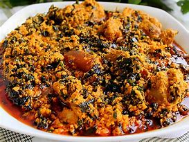

Today is your lucky day because I'm gonna take you on a journey on how to make different delicasies. It's going to be a fun experience in Dezi's Kitchen.
The recipes are super easy and instructions are simple to follow. I know for sure that after this Dezi's Kitchen will become a fast favourite of yours and I hope you enjoy following the instructions as I have enjoyed writin them down. Have fun!

Egusi Soup is an outstandingly delicious, quick, and easy soup with ground egusi seeds, similar to pumpkin seeds.
This meaty, nutty, spicy soup is protein-packed and full of tasty greens

Jollof Rice: I can't think of a more popular West African dish than Jollof rice.
It's popular for good reason — it is delicious!

Plantain frittata is packed with goodness, great for children and adults.
Here is an easy plantain recipe you can follow to make for you and your family.